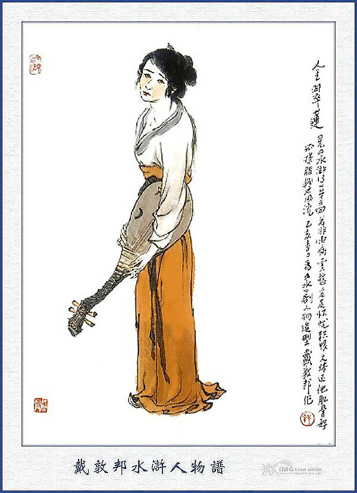
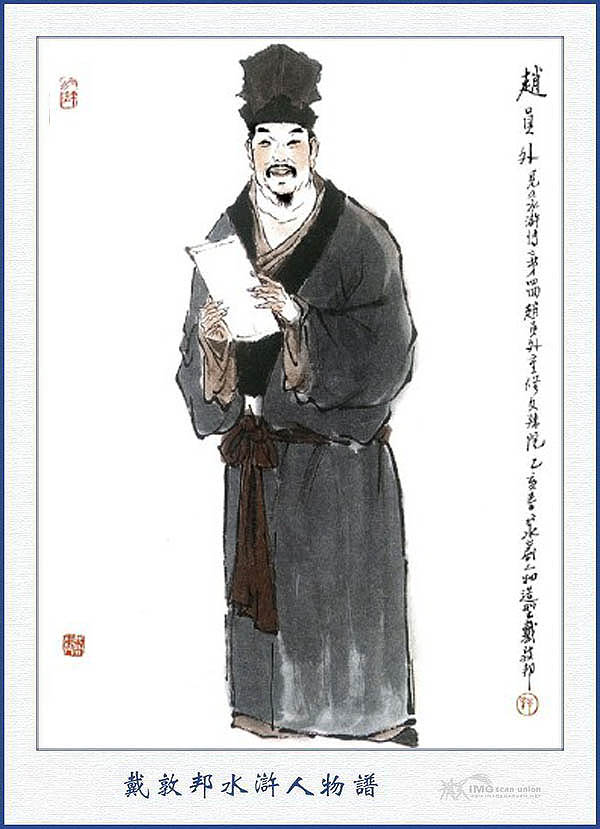
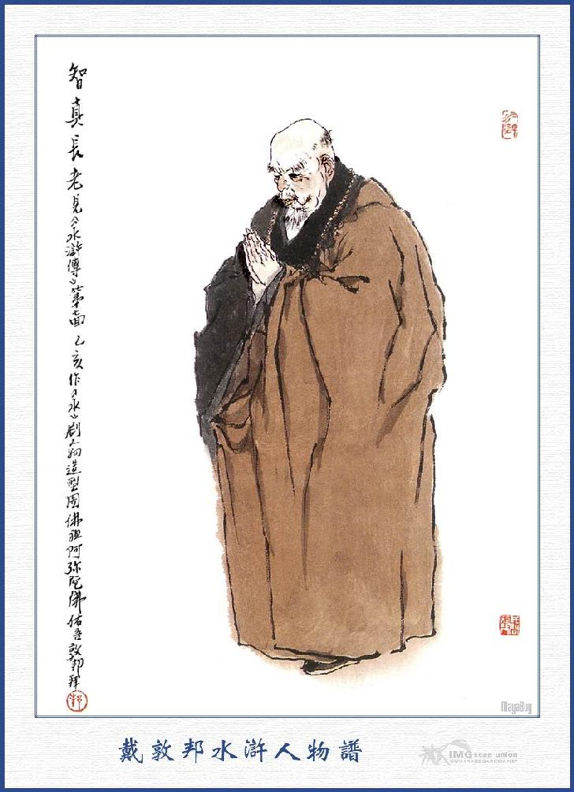
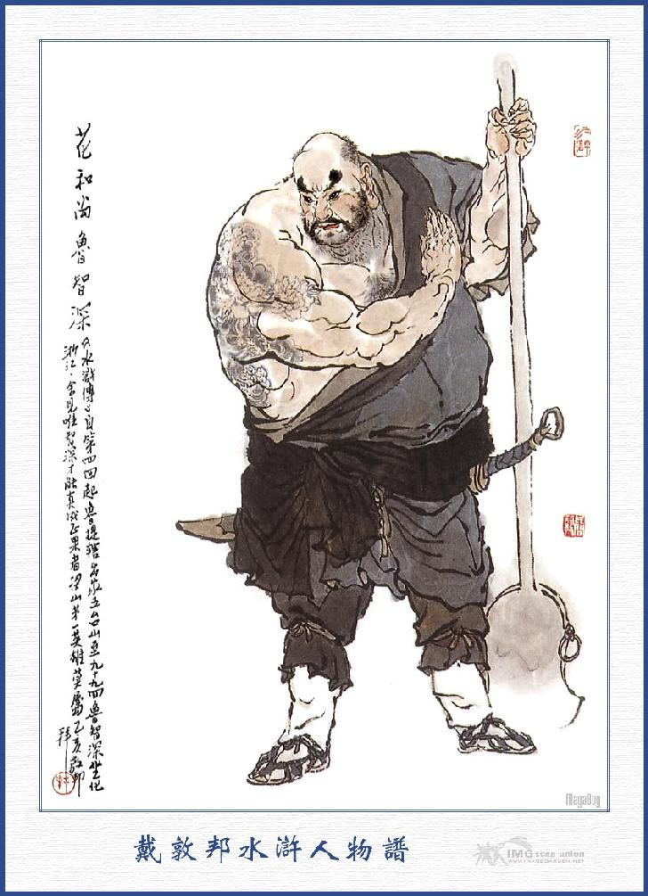
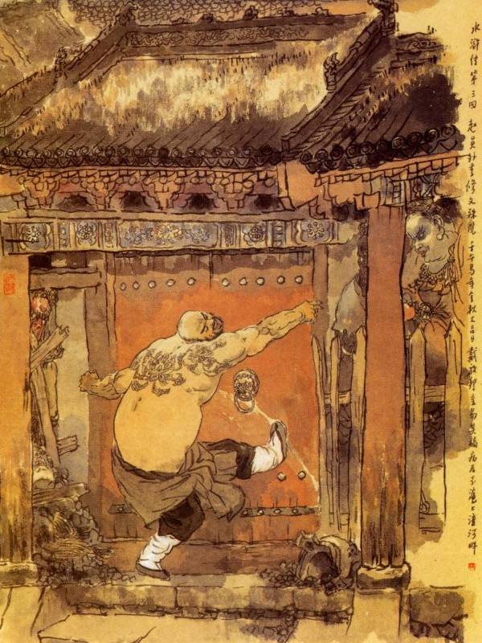
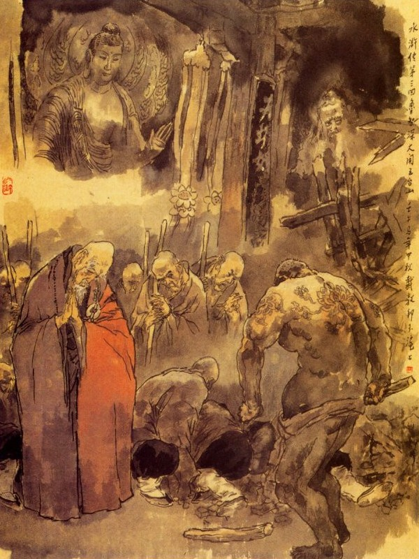

Lỗ Đạt thấy người ôm mình mà kéo đi, liền quay lại xem thì té ra chính là Kim Lão, gặp ở tửu quán đất Vị Châu khi trước. Kim Lão kéo Lỗ Đạt ra quãng vắng mà bảo rằng:
- Sao ân nhân to gan thế? Người ta đương yết thị thưởng tiền để bắt mình mà mình lại đứng đây xem bảng, ngộ lỡ ra quan quân biết đến thì sao?
Lỗ Đạt nói:
- Chẳng dấu gì ông lão, chỉ vì việc của ông lão hôm ấy mà thành ra tôi đến dưới cầu Trạng Nguyên, gặp tên Trịnh Đồ, đánh cho hắn có ba quyền chết tươi thẳng cẳng rồi thì tôi phải trốn tránh đến đây. Còn ông lão thì làm sao không về Đông Kinh mà lại cũng gặp ở đây như thế?
Kim Lão đáp:
- Từ phen được ân nhân cứu thoát, cha con thuê một cỗ xe, định về Đông Kinh, song lại e nhất lỡ bọn kia theo đuổi mà ân nhân không có ở đấy thì nguy hiểm không chơi, vì thế tôi phải rẽ đường sang bắc, may sao gặp được người hàng xóm cũ, buôn bán ở đây, liền dắt cha con tôi về cùng ở rồi sau làm mối cho con cháu một ông Viên Ngoại họ Triệu kia, nhà rất phong lưu phú quý, vì thế sự ăn tiêu chi phí không thiếu thức gì. Ông ta cũng thích nghề quyền võ, một đôi khi con cháu nó kể đến chuyện ân nhân thì ông ta lại thán phục mà mong sao được gặp mặt một lần mới thoả, vậy tiện đây xin đón ân nhân hãy tạm đến nhà tôi nghỉ đó mấy hôm sau rồi sẽ liệu.
Nói xong rồi, dẫn Lỗ Đạt cùng đi. Đường đi ngót nửa ngày trời, khi tới nơi, Kim Lão bước vào cửa cuốn mành mành lên, gọi con gái ra bảo rằng:
- Ân nhân đến đấy con ạ.

KIM THÚY LIÊN
Bấy giờ người con gái ăn mặc lịch sự ở trong nhà chạy ra đón Lỗ Đạt vào. Lỗ Đạt vừa vào, đặt xuống ngồi thì người con gái thụp lạy sáu lạy mà nói rằng:
- Nếu không có ân nhân cứu vớt thì cha con tôi đâu lại có được như ngày nay.
Nói xong mời Lỗ Đạt lên gác để nghỉ. Lỗ Đạt nói rằng:
- Tôi không ở đây lâu được, phải sắp sửa đi thôi.
Kim Lão không bằng lòng mà nói:
- Ân nhân đã đến đây, có lẽ nào chúng tôi lại để đi ngay.
Đoạn rồi đem khăn gói và gậy lên gác mà mời Lỗ Đạt lên. Bây giờ Kim Lão cho con gái ngồi tiếp chuyện Lỗ Đạt rồi tự mình xuống đem đầy tớ đi chợ, để mua các đồ hoa quả rượu chè, về làm cơm. Khi cơm rượu xong dọn lên bàn rồi, hai bố con rót rượu, ngồi tiếp Lỗ Đạt. Rượu được vài tuần, bỗng Kim Lão đứng dậy thụp xuống lạy, Lỗ Đạt ngạc nhiên nói rằng:
- Sao lão nhân làm như thế, thực tôi không bằng lòng chút nào.
Kim Lão nói:
- Chẳng dám dấu gì ân nhân, từ khi cha con tôi đến ở đất này, vẫn cảm đến ơn cứu sống của ngài mà làm bài vị tên ngài bằng mảnh giấy hồng, để sớm khuya đèn hương khấn vái, vậy mà ngày nay được trông thấy ngài thì có lẽ nào không lạy tạ ân nhân?
Nói xong lại ngồi lên tiếp rượu. Ba người ung dung chén tạc chén thù, mãi đến khi trời đã xế hôm thì chợt nghe có tiếng ồn ào dưới cửa. Lỗ Đạt chạy ra cửa sổ gác để nom, thấy ở dưới lầu có tới ba mươi người tay roi tay gậy, lại có một người ra dáng quan nhân, cưỡi trên mình ngựa mà quát to lên rằng:
- Chớ để cho quân giặc chạy thoát.
Lỗ Đạt nghe nói, biết là sự không hay, liền quay vào vớ lấy cái ghế, toan ném xuống, Kim Lão thấy vậy, vội vàng đứng dậy xem rồi can lại mà bảo rằng:
- Xin ngài chớ động vội.
Nói xong đi thẳng xuống dưới gác, đứng bên cạnh người cưỡi ngựa mà bảo thầm chi đó? Đoạn rồi thấy người ngồi trên mình ngựa vui cười mà thét bảo bọn kia đi hết. Người ấy xuống ngựa đi vào trong nhà rồi cho mời Lỗ Đạt xuống, vái lạy mà nói:
- Nghe tiếng sao bằng thấy người, thấy người bằng mấy nghe tiếng, dám xin nghĩa sĩ nhận lễ cho.
Lỗ Đạt không hiểu sao, liền hỏi Kim Lão:
- Quan nhân đây là ai, từ xưa chưa quen biết bao giờ; mà lạy chào như thế?
Kim Lão đáp:
- Thưa ngài. Chính đây là Triệu Viên Ngoại, bạn với con cháu nhà tôi đó, vừa rồi hắn vẫn tưởng là anh nào chè chén ở đây, cho nên toan đem trang khách đến để đánh, nhưng sau nghe nói là ngài đến đây thì lấy làm vui mừng quá đỗi.
Nói xong lại mời Lỗ Đạt lên trên lầu, sai người nhà thay các món ăn để Triệu Viên Ngoại cùng ngồi bồi tiếp. Triệu Viên Ngoại mời Lỗ Đạt ngồi cánh trên, Lỗ Đạt nhất định không nghe. Triệu Viên Ngoại cố ý nhường Lỗ Đạt ngồi trên mà nói:
- Tôi nghe tiếng ngài là một người anh hùng hào hiệp, trong lòng hâm mộ đã lâu, nay trời xanh run rủi được gặp ở đây, thực là may lắm!
Lỗ Đạt cười đáp rằng:
- Tôi là một người thô lỗ vô tài, lại đương mắc tội, trốn tránh đến đây, nếu Viên Ngoại có rộng lòng mà kết làm tương thức thì sau đây có cần đến việc chi, tôi xin hết sức.

TRIỆU VIÊN NGOẠI
Triệu Viên Ngoại cả mừng, hỏi thăm về việc đánh chết Trịnh Đồ rồi lại kể các nghề côn kiếm, trò chuyện chè rượu, mãi đến nửa đêm mới tan. Sáng hôm sau Triệu Viên Ngoại dậy sớm nói với Lỗ Đạt rằng:
- Ở đây tai mắt rất nhiều có khi không tiện, vậy xin đón Đề Hạt về ở trong nhà tôi ít bữa, có lẽ cẩn thận hơn.
- Nhà Viên Ngoại có gần đây không?
- Chỗ tôi ở là Thất Bảo Sơn, cách đây 10 dặm đường.
- Nếu vậy thì tiện lắm.
Triệu Viên Ngoại liền sai người về lấy thêm con ngựa nữa, để mời Lỗ Đạt đi. Trưa hôm ấy có ngựa tới nơi, Viên Ngoại sai người nhà mang khăn gói của Lỗ Đạt rồi hai người từ giã bố con Kim Lão mà lên ngựa ra về. Khi tới nơi Triệu Viên Ngoại cùng Lỗ Đạt xuống ngựa rồi dắt tay mời vào thảo đường, nhất diện sai người làm cơm thiết đãi. Lỗ Đạt ở đó được dăm bảy ngày, một hôm cùng với Triệu Viên Ngoại đang ngồi ở thư viện, nói chuyện với nhau thì bỗng thấy Kim Lão đến chơi. Kim Lão có dáng cấp bách, nhằm lúc vắng người mà nói rằng:
- Dám thưa ân nhân, hôm nọ ân nhân qua đến nhà tôi, vì Triệu Viên Ngoại không biết đầu đuôi, vội đem người nhà đến toan vây bắt làm ồn ào cho phố xá ai cũng có lòng ngờ vực, cho nên đến hôm qua có mấy tên công sai lảng vảng dò la xem chừng khẩn lắm, vì sợ khi họ biết ngài ở đây mà đến bắt thì không tiện cho ân nhân. Lỗ Đạt nói:
- Nếu vậy thì tôi xin đi chỗ khác cho rảnh.
Viên Ngoại có dáng ân cần mà nói:
- Bây giờ giữ Đề Hạt ở đây cũng e có điều không tiện thực, song nếu cho ngài đi thì chúng tôi lại càng không phải lắm, vậy tôi có một kế này, có thể tạm yên mà lánh nạn được, nhưng chẳng hay Đề Hạt có ưng ý hay không?
- Tôi bây giờ đang lúc tội nợ đến nơi, nếu lại được chỗ yên thân thì còn gì mà không ưng ý?
- Nếu như vậy thì hay lắm, cách đây vào khoảng 30 dặm, có một tòa núi gọi là Ngũ Đài Sơn, trong có viện Văn Thù tức là chùa Đạo Tràng Văn Thù Bồ Tát, có năm bảy trăm vị sư tu hành ở đó. Trước đây các cụ tôi bỏ tiền ra tu bổ chùa ấy, công đức rất to mà sư cụ chùa ấy ở đây là Trí Chân Trưởng Giả, lại chính là anh em thân thích với tôi, vậy nếu Đề Hạt có bằng lòng sang ấy mà cắt tóc đi tu thì bao nhiêu phí tổn chi tiêu, tôi xin chịu tất. Lỗ Đạt nghĩ một lúc rồi nói:
- Bây giờ tôi cũng không biết đi đâu cho được, vậy đành phải theo kế ấy là hơn.

PHƯƠNG TRƯỢNG TRÍ CHÂN
Đêm hôm ấy bàn soạn xong rồi, sắm sửa các đồ hành trang lễ vật rồi đến sáng hôm sau hai người cùng đi sang Văn Thù Viện. Vào khoảng trưa hôm sau đi đến chân núi Ngũ Đài, Lỗ Đạt và Triệu Viên Ngoại đi kiệu lên núi, sai đầy tớ vào chùa báo cho sư cụ biết. Sư cụ nghe tin vội vàng dẫn đồ đệ đi ra tiếp đón. Khi vào đến phương trượng, sư cụ mời Triệu Viên Ngoại ngồi trên khách vị, còn Lỗ Đạt thì ngồi ở ghế một bên đối diện với sư cụ. Triệu Viên Ngoại gọi Lỗ Đạt đến bên cạnh bảo thầm rằng:
- Ông định xuất gia, sao lại ngồi đối diện với sư cụ thế?
Lỗ Đạt nói:
- Nào tôi có hiểu ra thế nào ở đâu?
Nói xong, chạy đến ngồi ở phía dưới Triệu Viên Ngoại, còn các vị sư Giám Tự và Thư ký trong chùa, đều theo thứ tự mà ngồi cả hai bên. Bấy giờ người nhà Triệu Viên Ngoại đem các thứ lễ vật đến bày ở trên mặt án, trước chỗ sư cụ ngồi. Sư cụ trông thấy cười bảo Viên Ngoại rằng:
- Sao người cho lễ vật luôn như thế, thực là phiền cho người lắm.
- Gọi là có chút lễ mọn xin Hòa thượng nhận cho, có chi mà dám nói là nhiều, vả lại tôi có một việc muốn sang kêu với ngài, xin ngài từ mẫn đi cho. Nguyên là tôi có một người biểu đệ họ Lỗ, trước đây đã theo đòi việc quân ở Quan nội, vì nay thấy chuyện đời man mác lắm nỗi đắng cay, muốn tình nguyện để xuất gia đầu Phật. Vậy dám mong Hòa thượng lấy lòng từ bi quảng đại mà chấp nhận cho, còn các việc phí tổn thế nào, tôi xin cáng đáng.
- Nếu vậy cũng là vẻ vang cho cửa Phật, lão sư tôi xin vui lòng nghinh tiếp ngay, bây giờ xin mời các vị xơi nước đã.
Uống nước xong rồi, sư cụ gọi lũ Giám Tự và Thư Ký, đến bàn chuyện cho người vào đầu Phật và sai dọn cơm chay để thiết đãi hai người. Khi ấy chư tăng bàn vụng với nhau:
- Anh chàng này trông hai con mắt hung ác thế kia thì tu hành sao được? Ta nên vào bẩm với sư cụ để người xét kỹ xem sao. Đoạn rồi chư tăng cử một người vào mời Triệu Viên Ngoại và Lỗ Đạt ra ngồi ở khách sảng rồi cùng vào bẩm riêng với sư cụ rằng:
- Người vừa rồi trông dáng dữ tợn hung hăng, mặt mũi thô bỉ như thế, nếu sư cụ cho ở chùa này, chỉ e sau đây sinh sự khó chịu gì chăng?
Sư cụ nói:
- Người ấy là anh em của Triệu Viên Ngoại, công đức ở chùa ta, có lẽ nào mà không nhận được, các ngươi cứ an tâm, để ta xem thử ra sao?
Nói xong thắp một nén hương, ngồi xếp bằng tròn, miệng đọc mấy câu thần chú rồi nhắm mắt ngồi im một lúc, đến khi cháy hết nén hương, mới mở mắt bảo chư tăng rằng:
- Được rồi, các ngươi không ngại, người ấy tuy bây giờ trông dáng hung hăng như thế, song trên ứng với Thiên Tinh mà giữ lòng ngay thẳng, sau này chứng quả rất to, có lẽ các ngươi không bằng được, vậy chớ nên trở ngại làm chi?
Chư tăng nghe vậy, không dám nói năng gì nữa, sư cụ liền sai dọn cơm lên mời khách thụ trai, thụ trai xong rồi, Viên Ngoại bỏ tiền ra sai người sắm sửa lễ vật và may mũ áo, sắm giầy dép nhà chùa cho Lỗ Đạt. Ngày hôm sau các vật liệu đã chuẩn bị sẵn sàng, chư tăng ăn mặc lễ phục, đội mũ pháp giới, mặc áo cà sa, ngồi sắp hàng hai bên pháp tọa, còn sư cụ thì ngồi trước Phật đài, bày các đồ lễ phẩm lên trên rồi thỉnh chuông niệm Phật mà đọ sớ dâng hương, khi đọc sớ xong, đạo đồng dẫn Lỗ Đạt đến trước pháp tọa, bỏ khăn mũ đi rồi, đạo đồng lấy dao cắt tóc. Bấy giờ Lỗ Đạt đã thấy đầu trọc lóc, duy còn mấy cái râu cong ngược ở mép về cằm thì ra dáng đắc chí mà rằng:
- Phải, để mấy cái râu này cho mỗ thì thú lắm?
Chư tăng nghe nói buồn cười đến chết, song có sư cụ ở trên, cho nên không ai dám hở răng nữa. Sư cụ cùng chư tăng lại đồng thanh đọc mấy câu kệ rồi đạo đồng cắt xoẹt cả râu ria Lỗ Đạt, không còn để lại chút gì. Đoạn rồi sư cụ đặt pháp danh Lỗ Đạt là Trí Thâm và giao cho các đồ pháp giới cà sa cùng gậy, giầy nhà Phật. Trí Thâm ăn bận nhà chùa tử tế rồi Giám Tự dắt vào trước pháp tọa, sư cụ làm phép mà đọc rằng:
- Phép tu hành: Điều thứ nhất, phải noi theo Phật tính; Điều thứ nhì, giữ gìn khuôn phép; Điều thứ ba, phải theo bạn theo thầy; thế gọi là Tam quy. Còn như ngũ giới thì: Một là không được giết loài sống; Hai là không được trộm cắp; Ba là không được tà dâm; Bốn là không được ham rượu; Năm là không được nói càn, năm điều ấy có giữ được không?
Trí Thâm bỏm bẻm trả lời:
- Đã, tôi nhớ rồi.
Chư tăng ai cũng bật cười không nhịn được.
Bấy giờ các lễ đã xong, Triệu Viên Ngoại mời tất cả các chư tăng ra chỗ Vân Đường rồi đồ tự dẫn Trí Thâm, đi chào các sư huynh sư đệ khắp cả một lượt đến chiều mới xong.
Sáng hôm sau Triệu Viên Ngoại sắp sửa ra về, sư cụ cùng tất cả tăng đồ đều đưa chân xuống cửa núi, Viên Ngoại quay lại nói với chư tăng rằng:
- Em Trí Thâm xưa nay vốn tính thô mãng ăn nói tục tằn vậy, trong khi ở đây ăn mày lộc Phật, lỡ có điều không phải, dám xin hòa thượng và dưới các sư phụ đều lấy lòng từ mẫn thương đến tôi mà tha thứ tội đi cho thì tôi được đội ơn vạn bội. Sư cụ đáp:
- Viên Ngoại cứ yên tâm, tiểu tăng tôi xin hết lòng uốn nắn dần dần mới được.
Viên Ngoại lại gọi Trí Thâm ra dưới gốc cây tùng mà dặn nhỏ rằng:
- Hiền đệ ở đây không phải chỗ bình thường, phàm việc gì cũng nên cẩn thận chớ để lỡ ra mà khó xử trí về sau. Còn tiền nong áo xống thì tôi khắc xin chu tất cả cho.
Trí Thâm gật đầu nói:
- Việc ấy quan bác không phải dặn, tôi đây xin y lời được cả.
Khi đó Triệu Viên Ngoại bái từ sư cụ cùng các tăng đồ và Trí Thâm mà trở về nhà.
Lỗ Trí Thâm thấy viên ngoại về rồi, một mình vơ vẩn đi vào Phật đài, nằm vật xuống sập mà ngủ ngay một giấc. Các tăng đồ thấy vậy thì túm đến dựng dậy mà bảo rằng:
- Đã xuất gia thì phải học ngồi, chứ nằm thế này không được.
Trí Thâm giận mà nói:
- Việc ta ta ngủ, có can gì đến các ngươi?
Nói xong lại nằm vật xuống ngủ, không ai còn ngăn cản được. Sáng hôm sau bọn tăng đồ toan lên mách với Hòa thượng, nhưng có một người gạt đi mà rằng:
- Sư cụ đã nói về sau tất hắn hơn cả chúng ta vậy ngày nay có nói cũng vô ích thôi mặc quách hắn là xong.
Trí Thâm không thấy ai nói đến càng tự do hơn trước, cứ chưa tối thì đã nằm sóng sượt ra sập để ngủ, tiếng gáy ầm ầm như sấm động rồi lại phóng uế ra khắp cả đằng sau điện làm cho bẩn thỉu không ai chịu được. Lũ tăng bất đắc dĩ phải vào bẩm với sư cụ. Sư cụ gạt đi rằng:
- Thôi, nên nể mặt Triệu Viên Ngoại, cứ để cho hắn ở đây rồi sau hắn phải sửa đổi dần đi.
Từ đó không ai dám nói đến Trí Thâm nữa.

HOA HÒA THƯỢNG LỖ TRÍ THÂM
Lỗ Trí Thâm ở Ngũ Đài Sơn được 4, 5 tháng trời, rất lấy làm khó chịu, một hôm gặp buổi mát trời, chàng ta mặc áo thắt đai chân vận đôi giày thầy chùa, đi lững thững ra mái đình, ở lưng chừng sườn núi, ngồi chơi vơ vẩn một mình. Trong bụng chợt nghĩ: "Ta mọi khi vẫn cứ rượu ngon thịt béo ăn uống luôn mồm, thế mà bỗng dưng dắt ngay vào đây làm một bác thầy chùa, ăn không được ăn, uống không được uống, như thế có tức hay không? Lão Triệu Viên Ngoại mấy hôm nay cũng không thấy sai người đưa gì đến đây, cho ta chén cả, không biết làm cách gì có rượu uống cho đỡ thèm bây giờ?”
Đương nghĩ vẫn vơ như vậy thì thấy một anh chàng quẩy hai thùng rượu ở chân núi đi lên, miệng hát nghêu ngao:
Non xa có phải chiến trường?
Mục đồng nhặt ngọn gươm tàn ngày xưa.
Gió dồn ngọn nước sông ô,
Nỉ non như tiếng Ngu Cơ biệt chồng.
Lỗ Trí Thâm thấy anh chàng đi vừa hát, khi lên đến mái đình thì đặt gánh xuống ngồi nghỉ, liền cất tiếng hỏi rằng:
- Anh kia gánh những gì trong thùng đó?
- Thưa tôi gánh rượu đây?
- Rượu bao nhiêu tiền?
- Hòa thượng hỏi đùa làm gì thế?
- Ta lại đùa với ngươi hay sao? Ta hỏi thực đó.
- Rượu này tôi gánh lên trên núi, để bán cho đám kiệu phu, đám nhà bếp, cùng các nàng quán họ mua, chứ như ở trong chùa thì sư cụ đã có lệnh cấm, nếu ai bán rượu cho các vị sư, tất là bị phạt tất cả tiền rượu mà còn bị đuổi đi ngay lập tức, vậy hòa thượng hỏi làm chi?
Lỗ Trí Thâm cáu lên mà rằng:
- Thế thì ngươi không bán cho ta hay sao?
- Hòa thượng giết, tôi cũng không dám bán.
- Ta không giết ngươi để làm gì, ta chỉ hỏi mua rượu của ngươi để uống thôi.
Anh kia xem chừng núng thế, không cự nổi được hòa thượng, liền nhắc gánh lên vai mà chạy, Trí Thâm vùng dậy đuổi theo, nắm lấy gánh rượu rồi đá cho anh chàng kia một cái, ngã lăn queo xuống đất rồi hai tay xách hai thùng rượu, đi lên mái đình, ngồi khật khà khật khưỡng một mình múc rượu mà uống. Được một lát uống hết hẳn một bên thùng rượu, liền gọi tên bán rượu mà bảo rằng:
- Rượu ta mới uống có một thùng, sáng mai đến đây mà lấy tiền.
Bấy giờ anh kia mới lóp ngóp bò dậy, vừa đau đớn vì bị đá, vừa phần sợ sư cụ biết thì khổ tới thân, đành phải im hơi. Khi ấy Lỗ Trí Thâm nghe trong mình đã say sưa nóng nảy, liền cổi áo bỏ mũ cho mát rồi khệnh khạng đi thẳng về chùa. Vừa khi lên tới cổng chùa, hai tên canh cửa cầm roi chạy ra ngăn lại mà cự rằng:
- Anh là người tu hành mà sao lại say sưa như thế? Sư cụ đã ra lệnh cho các hòa thượng, nếu ai phá giới uống rượu thì phạt đánh 40 roi, bằng những người canh cổng để cho các sư say rượu vào chùa thì cũng phải phạt đòn một chục. Vậy anh đi xuống ngay đi thì tôi tha cho mấy chục roi đòn ấy.
Lỗ Trí Thâm vừa bước chân vào cửa thiền môn, tính cũ vẫn còn hăng hái, nay nghe thấy lũ kia nói vậy thì trừng mắt lên mà nói rằng: A! Quân này gớm thực, bây muốn đánh nhau thì ta đánh nhau, cho mà xem. Hai tên kia thấy vậy thì một tên chạy vội vào trong chùa, còn một tên giả cách giơ roi ra để giữ Trí Thâm lại. Trí Thâm sốt ruột sấn vào gạt hất đầu roi đi rồi tát cho tên kia một cái, lộn chúi vào trong cổng. Tên kia vừa ngóc đầu toan dậy, lại bị Trí Thâm đánh cho một quyền ngã gục xuống đất, kêu ám ỹ cả rồi Trí Thâm vừa vội vội vàng vàng vừa chạy vào chùa, vừa quay lại nói rằng:
- Ông hãy tha cho mày đấy.
Trong kia Giám Tự nghe thấy tên canh cửa vào bảo thì vội vàng gọi những tên nhà bếp cùng là phu kiệu, tất cả tới hai ba mươi người đều cầm roi vác gậy đổ ra ngăn cản Trí Thâm. Trí Thâm thấy vậy thét lên một tiếng như sấm vang trên núi rồi phóng bộ vào toan đánh. Đám kia thấy Trí Thâm ra dáng hung tợn thì ai nấy đều sợ hãi cùng nhau nấp vào trong điện mà khép cửa lại. Trí Thâm đẩy sấn vào trong điện đánh cho anh nào anh ấy chạy tháo chân không kịp. Giám Tự thấy nguy cấp đến nơi, hớt hãi chạy vào báo cho sư cụ biết. Sư cụ nghe nói mãi mốt, dẫn mấy tên đồ đệ chạy đến chỗ Lỗ Trí Thâm mà nạt rằng:
- Trí Thâm không được vô lễ ở đây.
Lỗ Trí Thâm tuy bấy giờ say rượu, nhưng cũng biết sợ sư cụ một chút liền chạy đến gần trước mặt vái chào sư cụ rồi trỏ xuống dưới điện mà thưa rằng:
- Trí Thâm này uống có mấy hớp rượu cũng không chọc ghẹo đến ai thế mà họ lại kéo nhau đến đánh là nghĩa gì vậy?
Sư cụ kiếm lời đấu dịu mà rằng:
- Ngươi hãy nghe lời ta mà đi ngủ đi rồi đến mai sẽ hay.
Trí Thâm vâng lời rồi nói một mình rằng:
- Nếu ta không nể lời sư cụ thì tất là đánh chết chúng bây mới thôi.
Nói đoạn sư cụ sai đồ đệ đưa Trí Thâm về tăng phòng để nghỉ. Bấy giờ chư tăng lại phàn nàn với sư cụ rằng:
- Hôm nay sư cụ nghĩ thế nào? Phỏng có dung người ấy ở trong chùa để làm loạn thanh quý nữa hay không?
- Bây giờ vẫn biết rằng như thế, nhưng sau này làm thế nào hắn cũng có ứng quả to, vả chăng mình cũng phải nể mặt ông Triệu Viên Ngoại mà hãy dung thứ cho hắn rồi mai ta sẽ dặn bảo hắn thì tất là hắn cũng tỉnh ra dần dần.
Chư tăng nghe nói ai cũng cười thầm mà không dám nói gì. Sáng hôm sau sư cụ sai người gọi Lỗ Trí Thâm đến mà bảo rằng:
- Triệu Viên Ngoại đưa ngươi đến đây, để ăn chay niệm Phật, ta đã răn bảo các lẽ, phàm nhà tu hành là không được sát sinh, hai là không được trộm cướp, ba là không tà dâm, bốn là không được ham rượu, năm là không được nói càn, có giữ được năm điều ấy, mới là đắc đạo; nay ngươi mới tới đây được ít lâu mà đã rượu chè be bét, đánh hết người này đến người kia làm cho ầm ĩ cả chùa lên, như thế là nghĩa làm sao?
Trí Thâm quỳ xuống mà đáp rằng:
- Từ nay không dám như thế nữa.
Sư cụ lại nghiêm trách rằng:
- Một người xuất gia đầu Phật mà rượu chè be bét làm hại đến thanh quý như thế, nếu ta không nể lòng Triệu Viên Ngoại thì ta không dung ở chùa này nữa, vậy từ nay ngươi hãy liệu thân mà chừa đi mới được.
Trí Thâm cung kính vâng lời mà đoan rằng:
- Không bao giờ dám làm như thế nữa.

Đoạn rồi sư cụ lưu Trí Thâm ở phương trượng, cho cùng ngồi ăn cơm mà lấy lời khuyên bảo mơn man, khiến cho trong lòng tự hối mà tỉnh ngộ ra dần.
Cho hay:
Cương cường bạo ác đến đâu,
Nước mưa đạo đức tưới lâu cũng mềm.
Lỗ Trí Thâm từ khi phải một bữa say hôm ấy rồi đến ba tháng trời không hề dám bước chân ra khỏi cửa chùa nữa. Chợt có một hôm chiều trời ấm áp, đương độ tháng hai, một mình ngồi buồn bã ở chốn tăng phòng, liền lững thững dạo ra chơi mát. Khi đi đến sườn núi Ngũ Đài đương đứng xem phong cảnh làm vui, bỗng nghe thấy tiếng lóp đóp lát chát ở đàng xa đưa đến, Trí Thâm vội về tăng phòng, lấy thêm ít tiền bỏ vào túi rồi lững thững ra đi. Một mình vơ vẩn đi mãi đến núi Ngũ Đài thì thấy cửa nhà đông đúc, hàng quán xôn xao, hiển nhiên là một nơi thành thị, Trí Thâm tự nghĩ tự bụng:
- Nếu ta sớm biết đây có phố xá hàng quán thế này thì những khi cao hứng phải xuống đây đánh chén, can chi mà phải cướp rượu của ai.
Bụng nghĩ chân đi, vừa đến trước một cửa hàng thợ rèn, có mấy người đương ngồi đánh rèn tại đó, Trí Thâm liền đi thẳng vào trong hàng quán mà hỏi rằng:
- Các anh làm thợ rèn ở đây, có thép tốt hay không?
Anh thợ rèn ngẩng trông lên thấy Lỗ Trí Thâm, tuy ăn mặc lối nhà chùa, song mặt mũi dữ tợn mà mái tóc lại giở ngắn giở dài, trong bụng cũng có phần kinh sợ, bèn mời Trí Thâm ngồi mà hỏi rằng:
- Chẳng hay hòa thượng muốn đánh vật gì để dùng?
- Ta muốn đánh một cây thiền trượng và một thanh giới đao, nhưng không biết rằng có thép tốt hay không?
- Bẩm có, hòa thượng định dùng bao nhiêu cân, để đánh thiền trượng?
- Ta muốn đánh cây thiền trượng nặng 100 cân, có thép tốt hay không?
Phó rèn cười mà đáp rằng:
- Bạch hòa thượng, thế nào mà tôi đánh không được, nhưng chỉ sợ hòa thượng không dùng nổi mà thôi, đến như cây đại đao của đức Thánh Quan ngày trước cũng chỉ có 80 cân nữa là.
Trí Thâm cau trán mắng rằng:
- Ta đây lại không bằng Quan Công à? Hắn cũng là người chứ gì?
- Cứ như ý chúng tôi, chỉ đánh vào khoảng 40, 50 cân cũng nặng lắm rồi.
- Ừ thôi ta cũng nghe lời anh, cứ đánh 80 cân và nặng bằng cây đao của Quan Công cũng được.
Phó rèn nghĩ một lát rồi nói:
- Tôi thiết tưởng sư phụ to béo như thế mà cầm cái cây gậy nặng quá thì không tốt, vậy tôi xin chọn thứ thép tốt đánh độ 62 cân cũng được, còn thanh giới đao thì tôi hiểu rồi, bất tất phải nói nữa.
Trí Thâm gật đầu nói:
- Cũng được, tất cả hai cái ấy, ngươi lấy bao nhiêu tiền?
- Tôi không nói thách, xin sư phụ cứ cho đủ năm lạng bạc mới được.
Trí Thâm đưa tiền mà nói:
- Được, 5 lạng ta cũng trả cho anh, nếu anh đánh được tốt thì ta thưởng thêm cho.
Phó rèn nhận tiền rồi nói:
- Chúng tôi xin đánh cẩn thận cho sư phụ.
Lỗ Trí Thâm lại bảo với phó rèn rằng:
- Ta còn ít tiền lẻ ở đây, anh đi mua rượu về uống với ta một thể cho vui.
Phó rèn nghe nói từ chối rằng:
- Tôi bận việc làm ăn, không thể hầu rượu ngài được, vậy xin sư phụ cứ tự tiện cho.
Trí Thâm đứng dậy, ra khỏi nhà lò rèn, được dăm ba mươi bước thì thấy có hàng rượu ở đó liền bước rảo cẳng vào hỏi mua rượu để uống. Nhà hàng thấy vậy, không dám bán mà nói rằng:
- Sư cụ trên chùa đã truyền lệnh, chúng tôi không được bán rượu cho cho các vị sư, nếu mà bắt được bán vụng thì tất phải phạt mà tịch ký cả tiền, vậy xin sư phụ tha lỗi cho, không khi nào chúng tôi dám như thế.
Trí Thâm thấy vậy, đành phải ra đi, tìm hàng khác. Ngờ đâu đi đến dăm bảy hàng mà không hàng nào bán cả, Trí Thâm lấy làm tức giận, lẩm bẩm nói một mình rằng:
- Ta không nghĩ được kế gì mà uống rượu lấy một bữa thì tức quá.
Chợt đâu trông thấy phía cuối chợ đằng xa, phảng phất có Hạnh Hoa Thôn ở đó, Trí Thâm nghĩ ngay ra một kế rồi xăm xăm đến hàng rượu vắng vẻ quạnh quẽ bước vào ngồi ở gần cạnh cửa sổ gọi chủ hàng mà bảo rằng:
- Tôi ở đằng xa qua tới chốn này, muốn mua rượu uống chơi, xin chủ nhân bán cho tôi một ít.
Chủ hàng nhìn Trí Thâm một lượt rồi hỏi rằng:
- Hòa thượng ở đâu mới tới đây?
- Tôi là người tăng lữ ở đường xa đi qua đây thôi.
- Nếu có phải người tu hành ở trên chùa Ngũ Đài thì tôi không bán.
- Không phải, cứ đem rượu ra đây bán cho tôi.
Chủ hàng nhận kỹ Trí Thâm, vừa phần lạ mặt, vừa phần lạ tiếng thổ dân thì cũng tin cho là thực, liền hỏi ngay rằng:
- Người định lấy bao nhiêu rượu?
- Không cần phải hỏi, hãy cứ mang cho tôi mấy be lớn đã.
Chủ hàng đem rượu đến, Trí Thâm uống luôn mấy mươi be một lúc rồi quay ra hỏi chủ hàng rằng:
- Ở đây có thịt thà gì đem bán cho tôi một thể?
Chủ hàng nói:
- Thưa ngài, sáng hôm nay hàng tôi vẫn có thịt bò nhưng bây giờ bán hết cả rồi.
Vừa nói xong thì Lỗ Trí Thâm ngửi thấy mùi thịt thơm xông đặc lên mũi, liền đứng dậy chạy vào sân trong, thấy bên cạnh tường có nồi thịt chó đương nấu bèn bảo với chủ hàng rằng:
- Trong nhà có thịt chó sao bác không bán cho tôi?
- Thưa ngài, tôi sợ những người xuất gia không xơi được thịt chó, cho nên không dám bán cho ngài.
Trí Thâm nói:
- Tôi có tiền đây, sao lại không ăn được?
Nói xong liền lấy tiền đưa cho chủ hàng mà bảo rằng:
- Tiền đây hãy bán cho tôi nửa quầy.
Chủ hàng mãi mốt lấy nửa quầy thịt chó mang ra để trước mặt bàn. Trí Thâm trông thấy cả mừng giơ tay cầm lấy đùi chó vừa xé vừa ăn, lại vừa uống hết mươi be rượu nữa. Khi ấy trong bụng hãy còn thòm thèm liền gọi chủ hàng ra để mua thêm. Chủ hàng có ý ngần ngại mà từ chối rằng:
- Bạch ngài chỉ còn có ngần ấy mà thôi.
Trí Thâm nghe nói tức giận quắc mắt lên mà hỏi:
- Ta ăn không của ngươi hay sao? Mà ngươi hạn cho ta có bằng ấy?
Chủ hàng nghe giọng hòa thượng đã có hơi rượu thì không dám dùng dằng, liền hỏi ngay rằng:
- Ngài định mua bao nhiêu nữa?
- Ngươi cứ đem một thùng nữa ra đây.
Chủ hàng bất đắc dĩ lại phải mang một thùng rượu nữa ra. Trí Thâm gật gù ngồi uống mãi đến hết cả thùng rượu mới thôi. Bấy giờ còn thừa lại nửa quầy thịt nữa, Trí Thâm lại đút túi để mang về. Khi ra đến cửa còn quay lại mà bảo chủ hàng rằng:
- Ngày mai nếu có tiền thì tôi lại đến đây nhé?
Nói xong quay gót sồng sộc đi thẳng về lối Ngũ Đài Sơn, chủ hàng trông thấy chỉ lắc đầu le lưỡi mà không dám nói làm sao cả. Trí Thâm đi về đến mái đình ở lưng chừng núi ngồi đó một hồi, nghe hơi rượu đã bốc lên nồng nực, liền đứng dậy mà nói một mình:
- Ta lâu nay không đi bài côn bài quyền nào, nghe trong mình không được khỏe mạnh, bây giờ tiện đây thử giở vài ngón xem sao?
Nói đoạn đi xuống sân đình, xắn hai tay áo lên rồi đánh bên nọ đánh bên kia, hắt lên đá xuống, lấy sức lấy gân, múa may một mình, đoạn rồi chạy lên đánh vào các cột ở góc đình một quyền rất mạnh làm cho các cột gãy hẳn ra đôi đoạn mà một bên góc mái đình cũng đổ khịu xuống. Bấy giờ bọn canh cổng ở trên nghe thấy tiếng đánh sầm giữa lưng chừng núi, ngó cổ ra nom thì thấy Lỗ Trí Thâm đương chân thấp chân cao đi sồng sộc lên núi, bèn cùng lắc đầu mà bảo nhau rằng:
- Khổ chưa! Thằng súc sinh hôm nay lại say quá chén nữa rồi, chúng ta phải đóng cổng lại mới được.
Nói đoạn họ khép hai cánh cổng chùa, khóa chặt lại tử tế rồi cùng đứng vào chỗ khe cửa mà nom ra thì thấy Lỗ Trí Thâm vừa đi tới nơi giơ tay đập cửa mà gọi ầm ầm lên như hổ thét. Lũ canh cổng cứ đứng yên đó, không ai dám mở cổng ra. Trí Thâm lại đập gõ hồi lâu không ai chịu mở, quay cổ ra phía cổng bên tả, thấy có pho tượng Kim Cương ở đó, liền quát lên rằng:
- Thằng quái này to lớn như thế mày không mở cử cho ta, lại còn giơ quyền để dọa ta à? Nói thiệt ta đây không sợ mày đâu?
Nói dứt lời rồi nhảy tót lên bệ, vớ thanh củi nhằm cẳng tượng mà vụt lấy vụt để, bao nhiêu những phấn son sơn nhựa, đều long bật ra cả. Lũ canh cổng nom thấy vậy cả kinh, mãi mốt bảo nhau chạy vào báo với sư cụ. Ngoài kia Trí Thâm đứng đợi hồi lâu, không có ai ra mở cửa, lại quay cổ nom sang bên hữu cũng thấy pho tượng Kim Cương ở đó, rất tức giận quát to lên rằng:
- Lại thằng này cũng há hốc miệng mà cười ta nữa hay sao?
Đoạn rồi cũng nhảy lên bệ, đá luôn vào cẳng pho tượng mấy cái đổ lăn đùng xuống đất mà đứng cười ha hả một mình. Khi đó lũ canh cổng chạy vào báo với sư cụ thì sư cụ gạt đi mà bảo rằng:
- Thôi các ngươi cứ ra đi, để đấy mặc hắn.
Vừa nói xong thì lại thấy lũ Giám Tự và Thủ Tự chạy mãi mốt vào mà bạch rằng:
- Thằng khốn nạn hôm nay lại say rượu quá, hắn đã đánh đổ cả mái đình và đương phá hủy hai pho tượng Kim Cương ở ngoài kia.
Sư cụ nghe nói vậy cũng chỉ ung dung mà đáp lại rằng:
- Xưa nay đến ông Thiên Tử còn sợ thằng say rượu, huống chi chỉ là lũ thầy chùa? Còn như hai pho tượng Kim Cương cùng mái đình kia, nếu hắn có đánh hỏng ở đâu thì đã có Triệu Viên Ngoại đền ở đấy, can chi mà nói cho phiền.
Chư tăng có ý không bằng lòng mà nói:
- Pho tượng Kim Cương là chúa tể ở cửa rừng cửa núi, có lẽ nào mà thay đổi dễ dàng như thế được?
Sư cụ lại cười mà đáp:
- Cứ gì pho tượng Kim Cương, cho đến hắn phá hỏng ngay tòa Phật Tam Thế cũng mặc lòng hắn vậy, chứ còn biết làm sao được? Các ngươi không nhớ chuyện hung tợn bữa trước hay sao?
Lỗ Trí Thâm đứng ở ngoài đợi mãi không có ai mở cửa cho thì nóng tiết mà quát:
- Đồ ăn mày kia, không mở cửa cho ta vào thì ta cho một mồi lửa đốt tiệt cả chùa chiền bây giờ.
Chúng tăng nghe thấy vậy thì anh nào anh nấy đều phải kinh sợ gọi người canh cổng bắt mở cửa cho Trí Thâm vào.

Lũ canh cửa cũng rung sợ khiếp kinh, sẽ rón rén đến rút cái then khóa ra rồi bỏ mặc cửa khép đấy mà chạy trốn mất cả. Bấy giờ chúng tăng cũng bỏ mà chạy trốn cả, Lỗ Trí Thâm sốt ruột không thể nào đợi được, liền giơ hai tay mà đẩy cửa một cái thật mạnh. Dè đâu then cửa ở trong đã tháo ra rồi, cho nên vừa đẩy tay vào một cái thì cánh cổng mở tung hẳn làm cho Trí Thâm ngã ngay sấp mặt vào trong cổng, đoạn rồi lại mãi mốt đứng dậy mà xoa đầu xoa mặt, chạy sộc vào trong phòng. Khi ấy có mấy vị sư đương ngồi ở trai đường với nhau, bỗng thấy Trí Thâm ở đâu lập cập bước vào, mặt đỏ bầng bầng như nước tượng sơn son thì ai nấy kinh ngạc đều cúi đầu xuống mà không dám ngẩng đầu lên nhìn, đoạn rồi thấy Trí Thâm chạy vào đến giường nằm vật xuống đấy mà ghé cổ ra đất nôn mửa thốc tháo; làm cho mọi người ngồi đấy, đều bưng mũi lắc đầu không sao nhịn được. Trí Thâm nôn mửa hồi lâu rồi lại ngồi chổm lên giường cởi áo bỏ mũ, bứt đứt cả thắt lưng rồi lại lấy quầy thịt chó giắt ở trong bọc ra mà nói một mình rằng:
- Tốt lắm! Bây giờ bụng lại đương đói đây, ta đem ra mà nhắm đi thôi.
Nói xong vừa xé thịt chó vừa ăn nhồm nhoàm ở miệng rồi quay trước quay sau trông thấy mấy vị sư đương lấy vạt áo bịt mũi ngồi gần ở đó, liền giơ miếng thịt chó sang một bên kia mà bảo rằng:
- Các bác có ăn thịt chó không?
Vị sư ấy mãi mốt nhảy xuống giường toan chạy, bất đồ bị Trí Thâm nắm tay kéo lại mà nhét cả vào mũi vào mồm không sao cựa được. Các sư kia thấy vậy túm đến để gỡ ra thì Trí Thâm giơ ngay cẳng tay đánh vung xích chó làm cho chư tăng và các khách nhà chùa đều chạy tán loạn. Giám Tự thấy vậy, không đợi nói cho sư cụ biết, liền cho gọi tất cả nhà bếp phu kiệu, cùng các vị chức vụ ở trong chùa, có tới hai trăm người đều cầm côn gậy đi vào tăng đường để chống cự lại. Trí Thâm trông thấy thế thì thét lên một tiếng rất to rồi chạy ngay vào Phật đường, vớ ngay cái án thư ở trước điện mà bẻ lấy hai cái chân án làm khí giới xông ra để đánh, chư tăng thấy khí lựcTrí Thâm mạnh tợn quá chừng thì anh nào cũng chùn tay lại mà không dám địch; Trí Thâm thừa thế đuổi tràn cho đến pháp đường mà đánh vung cả lên, không còn nể sợ điều chi. Vừa khi ấy thì thấy sư cụ ở pháp đường quát lên rằng:
- Trí Thâm không được vô lễ thế! Các sư cũng phải im đi.
Chư tăng nghe sư cụ nói thì tản mát mỗi người đi mỗi nơi, không dám vẫn vơ quanh đấy. Còn Trí Thâm thấy chúng tăng đã tản mát rồi cũng vất vả hai cái chân án xuống mà nói rằng:
- Xin sư cụ làm chứng cho tôi.
Bấy giờ sư cụ thấy Trí Thâm đã hơi có dáng tỉnh rượu, liền bảo rằng:
- Ngươi là phiền lụy ta quá! Mới hôm nọ say rượu làm ầm cả lên, ta phải gửi giấy cho Triệu Viên Ngoại để viết thư sang tạ lỗi với chúng tăng, thế mà hôm nay lại say sưa làm loạn đến thanh quý đánh gãy cả tượng Kim Cương, đổ cả mái đình ở ngoài núi rồi lại đánh nhau với chư tăng, như thế thì tội ác biết đâu mà kể! Đạo Tràng Văn Thù Bồ Tát ở núi Ngũ Đài đây là một nơi hương lửa thanh tĩnh biết mấy ngàn năm trời, nay có thể nào dung một người bậy bạ như thế mãi được! Ngươi hãy theo ta vào đây rồi ta liệu cho ngươi ở một chỗ khác mới được.
Trí Thâm theo sư cụ vào trong phương trượng, sư cụ liền nhất diện sai gọi khách nhà chùa cho đâu vào đấy, nhất diện sai gọi chư tăng đi yên nghỉ hẳn hoi rồi giữ Trí Thâm ngủ ở đó một tối. Sáng hôm sau sư cụ mưu cùng chư tăng, viết thư sang kể hết đầu đuôi cho Triệu Viên Ngoại biết và hứa xin cho Trí Thâm đi một nơi khác. Triệu Viên Ngoại tiếp được thư của sư cụ, liền viết giấy trả lời, hẹn xin các nơi phá hoại đều sẽ xuất tiền tu bổ đền, còn Trí Thâm thì tùy ý sư cụ xử cho. Sư cụ xem thư của Triệu Viên Ngoại, liền sai đồ đệ lấy ra mấy bộ mũ áo của nhà sư và 10 lạng bạc rồi gọi Lỗ Trí Thâm đến mà bảo rằng:
- Ngươi ở đây đã mấy phen say sưa chè rượu, lỗi đạo tu hành như thế, ta không thể nào dung túng được nữa, song ta cũng nể chút lòng Triệu Viên Ngoại bên kia, vậy ta cho ngươi một bức thư này, để đi tìm một chỗ mà yên thân, từ sau phải tỉnh hối dần đi mới được. Đây ta có câu đoán trước để về sau ngươi sẽ nghiệm dần. Cho hay:
Cửa thiền vừa thuở vui chơi,
Cũng toan chợp mắt sự đời bỏ qua,
Hay đâu trần hải phong ba,
Lửa lòng hồ dễ ai mà tưới tan?
Một bầu nhiệt huyết chan chan,
Thân này nợ với giang san còn nhiều,
Sá chi mặt nước cánh bèo,
Nam nhi hồ thỉ biết liều mới gan.
Lời bàn của Thánh Thán
Xem sách cần phải tinh ý, không thể đọc qua văn rồi chẳng nghĩ đến. Như hồi này tả Lỗ Đạt gặp Kim Lão rồi xoay đến vào chùa Ngũ Đài Sơn. Xét Kim Lão làm gì đưa nổi Lỗ Đạt đến Ngũ Đài Sơn? Đấy là sự bất đắc dĩ, chỉ cậy vào thân phận của Thúy Liên mà nảy ra một Triệu Viên Ngoại. Sở dĩ có Triệu Viên Ngoại, cốt làm cho Lỗ Đạt đi Ngũ Đài Sơn, chứ phải đâu ở huyện Nhạn Môn Đại châu, lại có một Viên Ngoại tốt đến như thế? Cho nên trong văn tự phải quay lại phía Lỗ Đạt mà xuất hiện ra, tả chỗ Viên Ngoại rất yêu chuộng những tay côn quyền mà nghĩa khí mới được. Phải xét đến đoạn văn Kim Lão cho biết, cháu gái thường thường nói với Viên Ngoại, về ân nhân là người như thế nào, khiến Triệu Viên Ngoại kính mến. Đó chỉ là dụng tình một ái thiếp mà nên như vậy. Đoạn văn sau Lỗ Đạt làm loạn Ngũ Đài Sơn, Viên Ngoại không nói câu gì phàn nàn thấy tấm lòng Viên Ngoại đã hết sức. Độc giả nếu không xét tới thì chả còn biết ngựa trâu, cái đực thế nào?
Tả nhà Kim Lão chỉ là phụ, tả Ngũ Đài Sơn lại là chính, thực là bút Sử mã phục sinh.
Tả Lỗ Đạt hai lần dùng rượu, cho rõ ra bản ngã con người, viết làm sao chương cú không ai ngờ tới? Thực khó lắm thay? Thế mà tác giả tả nổi, việc rất khó ở trong rất khó kia, khéo tả hai lần dùng rượu tiếp liên, phải làm cho cách quãng, nếu không tả cách quãng thì Lỗ Đạt chỉ ngày ngày dùng được rượu hay sao? Nay làm cho độc giả đã thấy một lần bị cấm, lại thấy một lần sau nữa hiện ra, khiến cho tai mắt không tưởng tượng nổi, vậy phải tả cách quãng, liệu bút chép ra, vì Chân Trí Trưởng Lão thường khuyên Lỗ Đạt theo cấm giới của kẻ tu hành, nay đột nhiên trật ra ngoài đề, tưởng không còn uống được nữa, thế mà xuống núi Ngũ Đài Sơn, lại sinh ra chuyện uống rượu, mới hay tác giả bút lực tài tình.